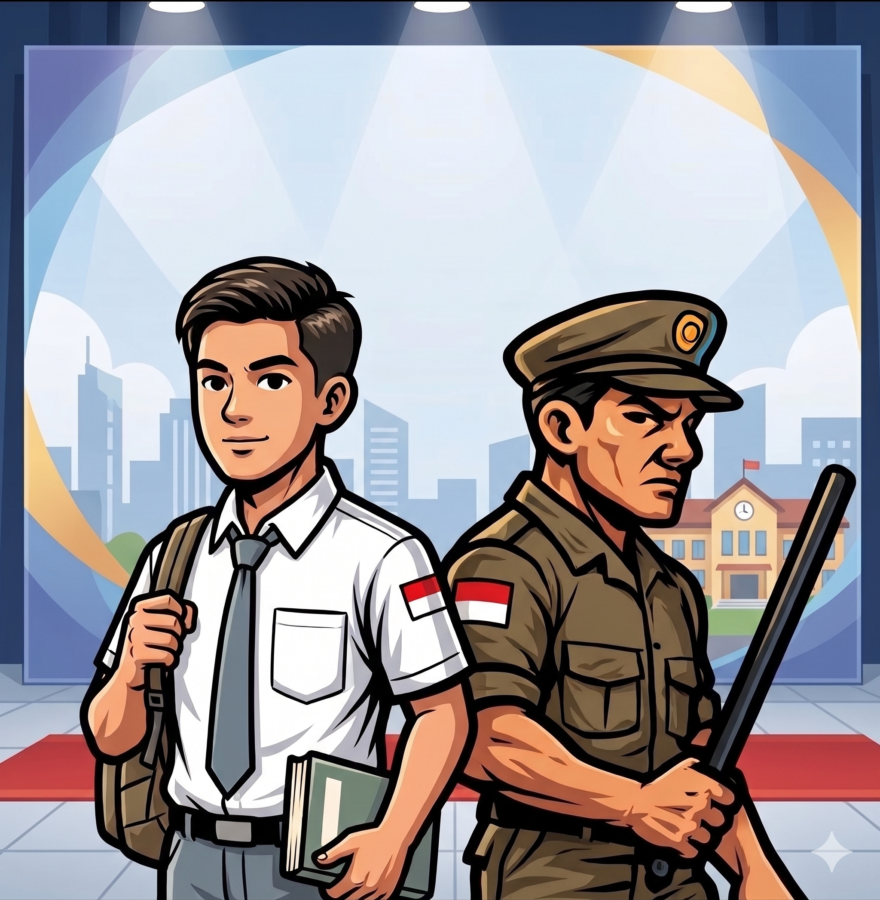

Satuan Polisi Pamong Praja (Satpol PP) adalah perangkat pemerintah daerah (provinsi/kabupaten/kota) yang bertugas menegakkan Peraturan Daerah (Perda) dan Peraturan Kepala Daerah (Perkada), menyelenggarakan ketertiban umum, serta memberikan perlindungan kepada masyarakat.
Dalam hal ini, secara umum, fungsi dari Satpol PP adalah untuk melaksanakan peraturan daerah (Perda) dan peraturan kepala daerah (Perkada), melaksanakan ketertiban umum, ketenteraman masyarakat, dan mendapatkan perlindungan bagi warganya. Hal ini berarti bahwa Satpol PP tidak sekedar menjadi penegak hukum daerah saja namun juga memiliki fungsi lain dalam menciptakan suatu lingkungan masyarakat yang selalu kondusif, tertib, dan aman.
Pada dasarnya, untuk melaksanakan fungsi tersebut, beberapa fungsi lain dari Satpol PP antara lain yaitu penyusunan program terkait dengan penegakan Perda dan Perkada serta ketertiban umum, ketenteraman, dan perlindungan masyarakat; melaksanakan kebijakan penegakan peraturan dan melakukan kordinasi dengan instansi terkait; pengawasan terhadap masyarakat, aparatur, dan badan hukum untuk melaksanakan peraturan; serta fungsi lain yang dapat diberikan oleh kepala daerah.
Trantibum adalah singkatan dari Ketentraman dan Ketertiban Umum. Tugas kita sebagai pelajar adalah menjaga lingkungan sekolah dan Kota Soe agar selalu aman, damai, dan nyaman untuk semua orang.
Aturan dibuat untuk melindungi hak setiap warga negara. Berikut landasan hukum utamanya:
Mengatur tentang ketertiban pelajar melalui Bab VIII Pasal 48 Ayat 2:
"Setiap siswa siswi wajib berada di sekolah pada jam sekolah kecuali sedang melaksanakan tugas atau kegiatan lain yang berkaitan dengan kepentingan."Buka / Unduh File Perda PDF
Banyak yang mengira Satpol PP kerjaannya cuma marah-marah dan razia. Padahal, Sesuai dengan mandat dalam Perda No. 1 Tahun 2017, SATPOL PP bertugas mengawasi ketertiban demi kenyamanan bersama. Kami mengajak teman-teman untuk mematuhi aturan jam sekolah ini, bukan karena kami ingin membatasi kebebasan, tetapi karena aturan ini hadir untuk melindungi teman teman dari bahaya yang akan terjadi. Yuk, cek tabel Mitos vs Fakta di bawah ini!
| Mitos di Kalangan Pelajar | Fakta Sebenarnya |
|---|---|
| Satpol PP suka asal tangkap pelajar yang sedang jajan. | Satpol PP hanya menegur pelajar yang asyik nongkrong di luar sekolah saat jam pelajaran berlangsung demi keamanan kalian sendiri. |
| Tugas Satpol PP cuma ngasih hukuman fisik. | Pendekatan kami adalah edukasi dan perlindungan agar pelajar terhindar dari aktivitas kenakalan remaja, kecelakaan, dan bahaya jalanan. |
Masa muda memang penuh kebebasan, tapi kebebasan tanpa tanggung jawab bisa jadi bumerang. Berikut adalah hal-hal yang sering ditemukan oleh tim patroli Satpol PP:
Mau tetap disiplin tanpa harus berurusan dengan patroli ketertiban? Simak tips berikut:
Agen, tonton rekaman misi di bawah ini untuk memahami dampak dari setiap tindakanmu bagi masa depan dan Kota Soe.
Informasi kontak, lokasi, dan media sosial resmi Satuan Polisi Pamong Praja Kabupaten Timor Tengah Selatan.
Alamat: Jl. Basuki Rahmat, Kota Soe, Kabupaten Timor Tengah Selatan, Nusa Tenggara Timur.
Telepon / WhatsApp: 085857827175
Hubungi KamiIkuti kegiatan dan pembaruan informasi dari kami melalui platform media sosial berikut: